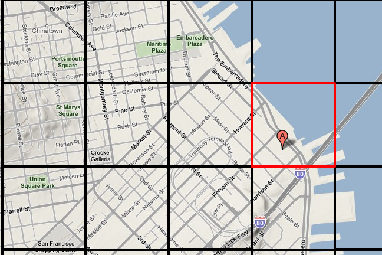
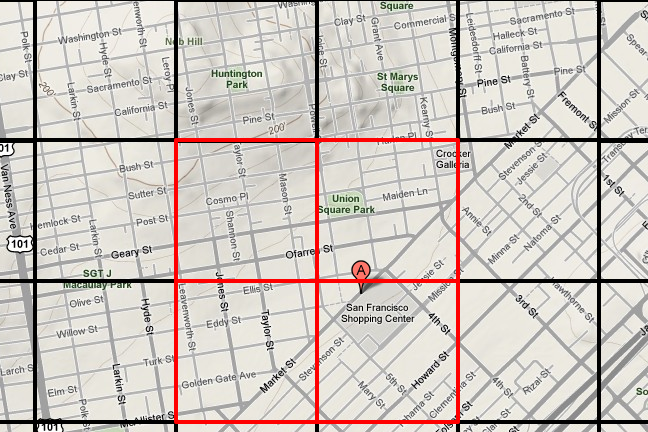

Marzia Niccolai, Brett Slatkin App Engine Team
February 04, 2009
Introduction
Never knowing when a strike of inspiration will cause me to work until late at night (or early in to the morning), I always wanted an application that could tell me where I could grab a cup of coffee or bite to eat where I was, when I was looking, be it 1pm or 1am. So, I decided to write such an application, with the Google Gears Geo-Location API to determine location, geolocation to search for nearby businesses, and Google Maps for easy visualization.
To do geo-location with App Engine, we need to rethink normal database techniques, since the inherent query limitations of App Engine means we cannot do inequality filters on multiple properties, such as longitude and latitude. This means that query-time computation of a location's bounding box is not possible. We have been recommending people use geohashing for this problem up until this point. Geohashing takes a latitude and longitude position and generates a single string. We can find close points by doing string prefix matching. However, this technique does have limits, especially in certain parts of the world.
Another solution to this problem is to pre-compute the bounding boxes for a location at write time. Brett Slatkin, a Google engineer on the App Engine team, developed an open source library for pre-computing bounding boxes at write time. We will use this library to develop our application: 24 hours in San Francisco.
Pre-Computing Bounding Boxes
Traditionally, if you are looking for locations near a specific point, you do two inequality filters on the longitude and on the latitude for your query. For instance in a MySQL database, such a query might look like:
SELECT *
FROM Business
WHERE Lat > (position_lat - d) AND
Lat < (position_lat + d) AND
Lon > (position_lon - d) AND
Lon < (position_lon + d);
This query searches for locations that are located in a box surrounding the search point:

This won't work with App Engine, due to the way the datastore handles queries (see Under the Covers of the App Engine Datastore), only inequality filters on one property are supported. However, a general strategy with App Engine is to compute at write time what would, in other systems, be computed during a query.
To do this, we assume that the world is pre-tiled with bounding boxes at different granularity. When wish to add a new location in our application, we compute the bounding boxes that surround that location when we write that entity to the datastore, and store all of the relevant bounding boxes in a ListProperty that we can easily query. If a location is sufficiently close to the edges of box, we may simply add the adjoining box to the list of relevant boxes.

Inputting a Location
When we input a location for which we will later want to search, we do a series of computations before saving the data to the datastore to compute bounding boxes for different granularities. We define a bounding box as two coordinates, the northwest corner of the box, and the southwest corner, and store this geobox as a string of lat|lon|lat|lon such as "37.78452999999|-122.39532395324|37.78452999998|-122.39532395323".
The resolution is determined by the number of places after the decimal point our data source contains. For example, 15 decimal-point values would be called "resolution 15". Each coordinate in the geobox must have all digits defined for its corresponding resolution. That means even trailing zeros should be present. In addition to a resolution, we also specify a "slice". A slice is how finely to divide each level of resolution in the geobox.
We will compute a geobox for a point by figuring out the closest known geobox that surrounds the point at the current slice and resolution. The source file for the geobox library gives greater details on the algorithm.
For our application, we specify a set of (resolution, slice, compute_set) values, where compute_set is a boolean value indicating whether to search for a location in a single geoboxes, or a set of surrounding geoboxes. (For larger geoboxes, we don't need to examine adjacent geoboxes.)
GEOBOX_CONFIGS = (
(4, 5, True),
(3, 2, True),
(3, 8, False),
(3, 16, False),
(2, 5, False),
)
def add(self, **kwargs):
lat = kwargs.pop('lat')
lon = kwargs.pop('lon')
for (resolution, slice, use_set) in GEOBOX_CONFIGS:
if use_set:
all_boxes.extend(geobox.compute_set(lat, lon, resolution, slice))
else:
all_boxes.append(geobox.compute(lat, lon, resolution, slice))
The methods compute and compute_set use the function _round_slice_down to do the actual bounding box calculation:
def _round_slice_down(coord, slice):
try:
remainder = coord % slice
if coord > 0:
return coord - remainder + slice
else:
return coord - remainder
except decimal.InvalidOperation:
# This happens when the slice is too small for the current coordinate.
# That means we've already got zeros in the slice's position, so we're
# already rounded down as far as we can go.
return coord
def compute_tuple(lat, lon, resolution, slice):
"""Computes the tuple Geobox for a coordinate with a resolution and slice."""
decimal.getcontext().prec = resolution + 3
lat = decimal.Decimal(str(lat))
lon = decimal.Decimal(str(lon))
slice = decimal.Decimal(str(1.0 * slice * 10 ** -resolution))
adjusted_lat = _round_slice_down(lat, slice)
adjusted_lon = _round_slice_down(lon, slice)
return (adjusted_lat, adjusted_lon - slice,
adjusted_lat - slice, adjusted_lon)
There are also a few other utility methods defined in the source file used to compute the geoboxes (such as to format the geobox strings as we explained above). Once we generate a list of geobox strings, we simply store them in a StringListProperty and put our entity, along with the other information (human readable address, phone number, hours, etc), in the datastore.
Querying for a location
After we have uploaded all of our current business information to our application, we will allow our users to query for locations near their current location. To do this, we take the user's current location (we explain how we get this information below), and construct a list of bounding boxes surrounding that location. We then perform a series of queries to retrieve all nearby businesses, and sort those locations by distance from our user.
class Store(db.Model):
@classmethod
def query(self, lat, lon, max_results, min_params):
"""Queries for locations repeatedly until max results or scope is reached.
Args:
lat, lon: Coordinates of the agent querying.
max_results: Maximum number of stops to find.
min_params: Tuple (resolution, slice) of the minimum resolution to allow.
Returns:
List of (distance, store) tuples, ordered by minimum distance first.
There will be no duplicates in these results. Distance is in meters.
"""
...
for params in GEOBOX_CONFIGS:
if len(found_stores) >= max_results:
break
if params < min_params:
break
resolution, slice, unused = params
box = geobox.compute(lat, lon, resolution, slice)
logging.info("Searching for box=%s at resolution=%s, slice=%s",
box, resolution, slice)
query = self.all().filter("geoboxes =", box)
results = query.fetch(50)
logging.info("Found %d results", len(results))
stores_by_distance = []
for store in found_stores.itervalues():
distance = _earth_distance(lat, lon, store.location.lat, store.location.lon)
stores_by_distance.append((distance, store))
stores_by_distance.sort()
return stores_by_distance
In our application's request handler, the call to query for the relevant stores is very easy:
def post(self):
user_pos_lat = float(self.request.get('lat'))
user_pos_lon = float(self.request.get('lon'))
my_stores = Store.query(lat=user_pos_lat,
lon=user_pos_lon,
max_results=2, min_params=(2,0))
And that's it!
Using Google Gears & Maps
To find and display a user's location, we use Google Gear's Geolocation API, and Google Map's Geocoding API. Both of these are client side techniques that use Javascript to get our user's lat/lon using GPS (if available) or a user entered address. We also use Google Maps to display the user location and all of the found business locations.
Using Javascript with App Engine doesn't require anything special, since it's executed on the client side. As with any application, we can include Javascript in our html templates. Working with Google Maps and Google Gears requires some basic Javascript and a couple of easy steps. The complete code is available in the svn repository, but below we cover the basic steps for using Gears and Maps in our application.
Get the User's Position
When our page loads, we check if our user has Gears, and if so, get their position. If the user does not have gears, we can prompt them to install it. Since our application depends on knowing exactly where our user is, we set the option enableHighAccuracy in the getPosition function. This will make it more likely that we will get the user's GPS information if they have GPS enabled. The function getPosition takes two arguments, updatePosition, which is a called if the location is found, and handleError, called when an error occurs.
function loadresources(){
if (!window.google || !google.gears) {
location.href = "http://gears.google.com/?action=install&message=" +
"To%20use%2024hrsinSF%27s%20auto-location%20feature%2C%20you%27ll%20need%20to%20install%20gears" +
"&return=http%3A%2F%2F24hrsinsf.appspot.com%2Fmobile";
}
geo.getPosition(updatePosition, handleError, {enableHighAccuracy: true});
return true;
}
Display the User Location
If our call to the Gears API returns the user's location, the functionupdatePosition uses the lat/lon position returned by Gears and displays it with Google Maps. This requires us to initialize a Maps instance, and add an marker to the map at the user's position. This is done with the Javascript here:
function updatePosition(position) {
lat = position.latitude;
lon = position.longitude;
var current_location = new GLatLng(lat, lon);
geocoder = new GClientGeocoder();
map = new GMap2(document.getElementById("map_canvas"));
geocoder.getLocations(current_location, showAddress)
old_overlay = current_location
map.setCenter(current_location, 13);
var marker = new GMarker(current_location);
map.addOverlay(marker);
}
Update the User's Location
If Gears fails to find the user location, or the user wants to search somewhere other than his or her position, we also allow the user to specify an address. Once the user enters their location in an HTML form, we can use the Google Maps getLatLng function to turn the human readable address in to a latitude and longitude:
function updateUserLocation(form){
if (geocoder) {
var loc = geocoder.getLatLng(
form.address.value,
function(point) {
if(!point){
alert('Bad Address')
return;
} else {
map.setCenter(point, 13);
var marker = new GMarker(point);
map.removeOverlay(old_overlay);
map.addOverlay(marker);
old_overlay = point;
}
}
);
}
}
This fairly simple Javascript is all we need to easily provide our users with a dynamic experience tailored to their location.
Conclusion
Now, I'll never be without an idea of where to go at 2 PM or 2 AM. And we hope this enables you to develop great Geo apps for App Engine. Here are some resources that will help you develop your application: